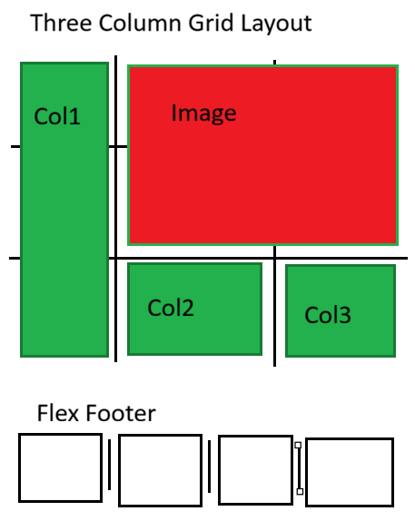
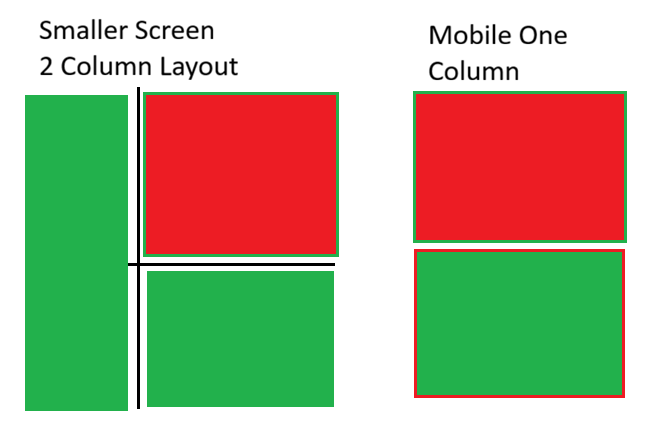

My goal is to build a web portfolio as a home to show off my projects to employers and family. I want this to be supplemental to my resume and more representative of who I am as a designer/programmer. I am desigining a personal logo and business card in a seperate class and I plan to use what I'm learning there on my site, potentially having the logo as my favicon.
Between the spec and my portfolio, the big changes will be the color scheme and footer. I like the header formatting and main image layout. I also may switch the text from three seperate columns to 1 vertical column and 1 seperate horizontal column under the image describing it.

I used a three column layout to mimic the original magazine, with the image taking up the top right 4 squares. Each column is 1fr length, each taking up even space. I ran into trouble getting the text at the end of the first column to wrap to the next so each paragraph is individual. This was a problem for achieving a look where the text all ends at the same point without cutting it off (which happens in the footer as well). For my website I will make the text below the image span two columns and be seperate text.

At a smaller scale the grid should be able to easily collapse down to one column and update the image size. The extra image would need to be repositioned at one column to fully be overlapping the main image.
To position the movie poster to the left of the big image, because it has an absolute position and doesn't block text, I floated a div to the position that it took up. Using tools in firefox inspect element I was able to make a custom shape using shape-outside to displace the text in the spot that the image takes up.
The edge of the footer has a torn paper effect to it which I can't achieve from just setting the background color, so I used border-radius to round the corner for a similar effect.
Default: Arial, Helvetica, sans-serif
Main Body: 'Times New Roman', Times, serif
Reddit Post: Indiana Jones drinking with his monkey
AbeBooks: "The Time is Now" Reagan Poster
Amazon: Indiana Jones Movie Poster
Reference Screenshot: Computer Image